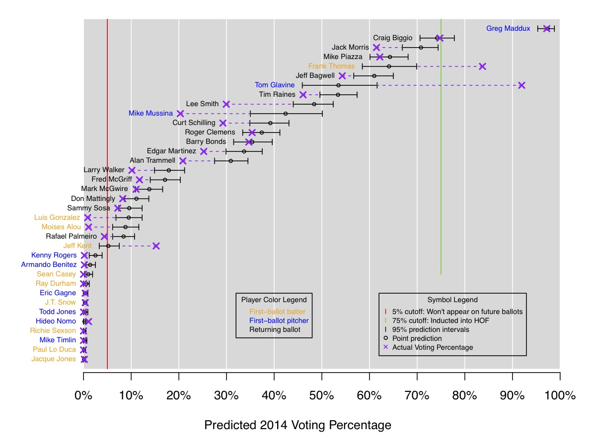

Kenny Shirley
Kenny ShirleyStatistician
I’m a research scientist in the demand forecasting group at Amazon in New York City. My research interests (past and present) include hierarchical Bayesian modeling, MCMC methods, data and model visualization, text mining, and other topics related to applied statistics.
This is my personal site, which is a mix of statistics research, side projects (mostly sports-related) and other stuff.
OLD NEWS
8/20/2014:
Last night I gave a talk for the NYC Sports Analytics Meetup Group, and it was a blast! There were lots of great sports researchers and enthusiasts in the crowd. My talk was about Baseball Hall of Fame voting, of course. Here is a link to the slides from my talk.
1/13/2014: (2-part news!)
Part 1: Last month I moved to our new NYC office with about 20 colleagues. (The rest of our lab moved from Florham Park, NJ to new office space in Bedminster, NJ). Our NYC office is a newly renovated space at 33 Thomas Street in Tribeca. The building is pictured below -- let's just say it's very secure, and hard to miss if you're walking around the neighborhood. I'm hoping we can start hosting some talks and workshops to get involved in the NYC tech scene.
Part 2: I've recently become slightly obsessed with Baseball Hall of Fame voting. After our interactive visualization of historical voting was featured on Deadspin as one of the 12 best sports infographics of 2013, I figured the next step would be to fit a model to historical data to predict Hall of Fame voting. Here's a link to my analysis and results. The 2014 predictions, pictured below, weren't great; we did OK with Maddux and Biggio, and pretty poorly with all the rest of the candidates! But for 2015 I like the initial predictions: Randy Johnson and Pedro Martinez are locks to get in, and John Smoltz is borderline. I'm planning to re-visit this throughout the year to improve the model.

8/13/2013:
My paper with Amy Reibman and Chao Tian was recently accepted to the IEEE International
Conference on Image Processing (aka ICIP). The paper is called
"A Probabilistic Pairwise-Preference Predictor For Image Quality", and in it we describe a multilevel Bayesian model that can be used
as an objective image quality estimator. To gather data, we used Mechanical Turk to run an experiment in which subjects viewed pairs of images online
and indicated which image from each pair they felt was of higher quality. The images were systematically degraded with various types of
distortions at various levels of severity. From our model we inferred the effects of the distortion types, their severities, and existing
objective quality estimators, while
controlling for the effects of subject-specific bias (where subjects systematically tend to prefer either the left or right image for some reason, all else
held equal)
and reference image bias (where subjects tended to prefer the image of the elephant compared to the image of the barn, for example). For all the
details, here's the pdf; Amy will be presenting it at the conference in Sydney Melbourne next month.
7/2/2013:
Two weeks ago at EuroVis 2013, my paper with Howard Karloff was awarded an Honorable Mention for
the Best Paper Award! Congrats also go to my
colleagues Jim Klosowski and Carlos Scheidegger (and their co-authors) for earning the other Honorable Mention
award. It was a solid showing for AT&T Labs Research!
4/25/2013:
My paper with Howard Karloff, "Maximum Entropy Summary Trees", has been accepted for publication
at EuroVis 2013. I'm really excited about this work: it is an
algorithm for summarizing the structure of a large, rooted, node-weighted tree that leads to nice
visualizations. We define a "summary tree" as an aggregation of the nodes of original tree subject to certain constraints. Then,
our algorithm computes the maximum entropy summary tree, where we define the entropy of a node-weighted tree as the
entropy of the discrete probability distribution whose probabilities are the normalized node weights. The result is a way
to visualize a 100-node summary, for example, of a really huge tree (which might have had 500,000 nodes to begin with), where
this particular 100-node summary is by definition the most informative such summary (according to entropy)
among all possible summaries of the same size. Sequentially viewing the maximum entropy k-node summary trees of size k = 2, 3, 4, ..., 100 is a
really nice way to visually do some EDA on large, hierarchical data.
Here is a link to the paper and to the webpage for summary trees, which includes more discussion and the supplementary material for the paper (an appendix + some examples). My plans for the next steps include an R package and a d3 implementation.
Below is the 56-node maximum entropy summary tree of the Mathematics Genealogy tree rooted at Carl Gauss (forced to be a tree by removing all but the primary advisor of each student), which has over 43,000 nodes in its original form.
2/5/2013:
My colleague Carlos Scheidegger and I recently built an
interactive visualization
of Baseball Hall of Fame Voting trajectories.
We show the BBWAA vote percentage by year for each of the 1,070 baseball players who have
appeared on the ballot since voting began in 1936. You can hover, click, and brush the plots
to interactively select subsets of players to view. Full instructions and examples are
included on the webpage, which was created using d3.
Data and code are available from our github repo.